MyAudioMaker 튜토리얼
앱 안의 튜토리얼과 같은 내용을 장과 단계별로 정리했습니다. 튜토리얼은 8개 장, 26단계로 되어 있고, 실제 프로그램을 움직이며 각 기능을 보여 줍니다. 그림은 웹 버전에서 튜토리얼을 실행하며 찍은 화면입니다 (npm run tutorial:docs 로 다시 찍습니다).
튜토리얼 실행하기
- 시작 페이지 › 튜토리얼 시작, 툴바 오른쪽의 튜토리얼 버튼, 도움말 › 튜토리얼 또는 F11.
- 오른쪽 아래 카드에서 다음 / 이전 단계로 한 단계씩, 자동 재생으로 끝까지 봅니다. 장 목록으로 원하는 장에 바로 가고, ✕ 또는 Esc로 언제든 끝냅니다. 카드는 머리글을 끌어 옮길 수 있습니다.
- 튜토리얼은 자기 프로젝트(84㎡ 아파트 템플릿)에서만 작업합니다. 열어 둔 프로젝트는 끝날 때 그대로 돌아오고, 바뀐 설정(테마·언어·패널 등)도 원래대로 돌려 놓습니다.
- 튜토리얼이 도는 동안에는 팝업(메뉴·설정·렌더링 창)이 별도의 창 대신 주 창 안에 열립니다.
- 모든 기능의 자세한 설명은 사용 설명서에 있습니다.
차례
1. 시작
1. 시작 화면
MyAudioMaker를 켜면 시작 화면이 열립니다. 카드는 끌어서 옮기고 모서리로 크기를 바꿀 수 있습니다.

2. AI로 곡 만들기
장르 하나를 누르면 그 장르로 AI 작곡 마법사가 열립니다. 주제를 적고 "곡 만들기"를 누르면 가사·멜로디·반주가 한 번에 만들어집니다.
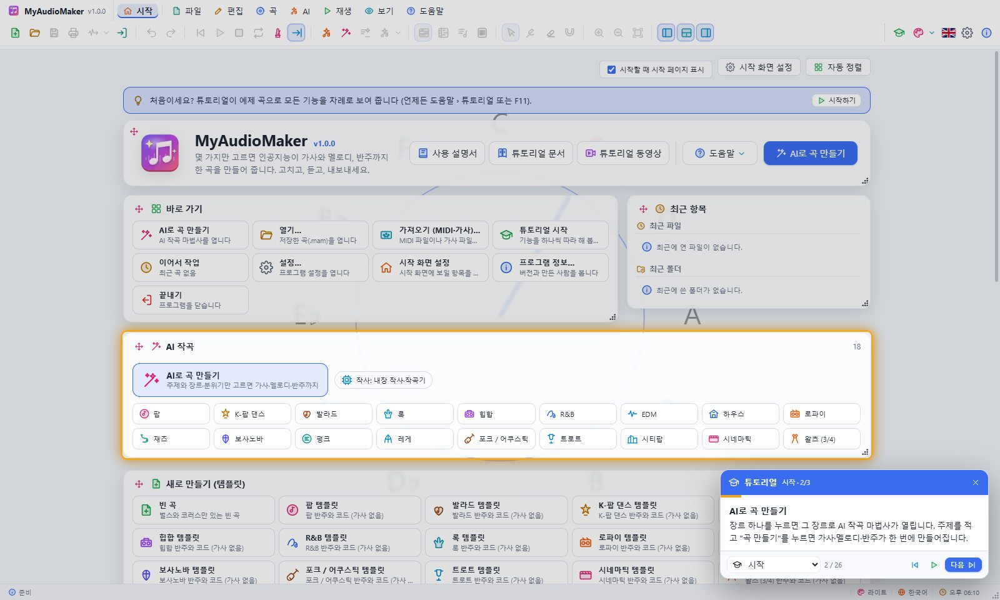
3. 예제 곡
장르별 예제 곡 24곡이 있습니다. 눌러서 열고 바로 들어 보세요.
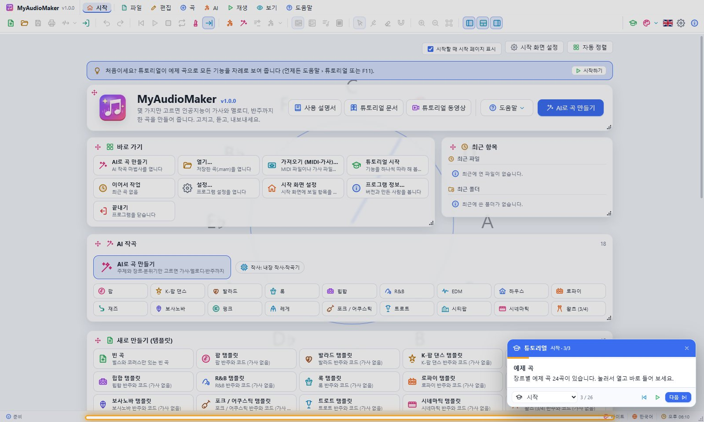
2. AI 작곡
4. 작업 화면
왼쪽은 AI 작곡·악기·구간, 가운데는 편곡·피아노 롤·가사·리드 시트, 오른쪽은 곡 구성과 속성, 아래는 문제·메시지·정보입니다.

5. AI 작곡 패널
주제, 장르, 분위기, 가사 언어, 조성, 빠르기, 곡 구성, 보컬을 고릅니다. 같은 시드는 같은 곡을 만들고, 주사위로 새 시드를 뽑습니다.
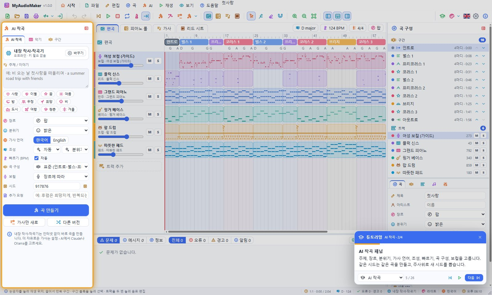
6. 어떤 AI가 쓰나요?
내장 작사·작곡기는 오프라인으로 바로 동작합니다. 설정 › AI에서 Claude(내 API 키)나 Ollama(내 컴퓨터의 모델)를 고르면 더 자유로운 가사와 코드를 씁니다.
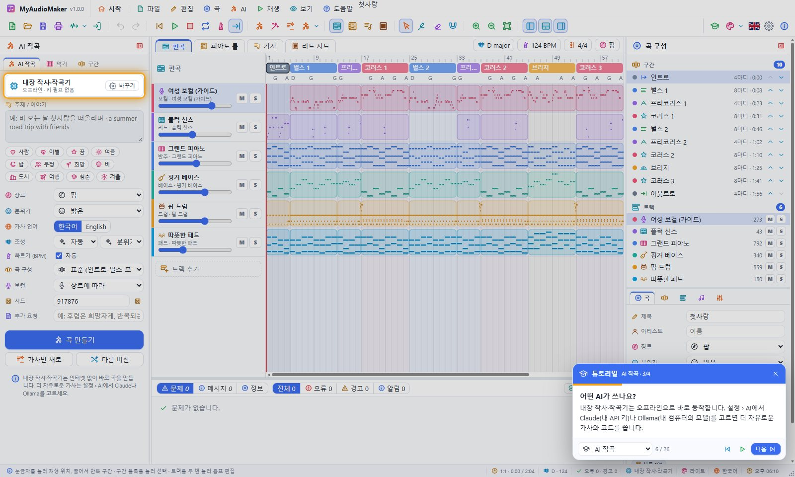
7. AI 작곡 마법사
모든 선택지를 한 화면에 모았습니다. 주제(테마), 장르, 분위기를 칩으로 고르고 "곡 만들기"를 누르세요 (Ctrl+Shift+G).
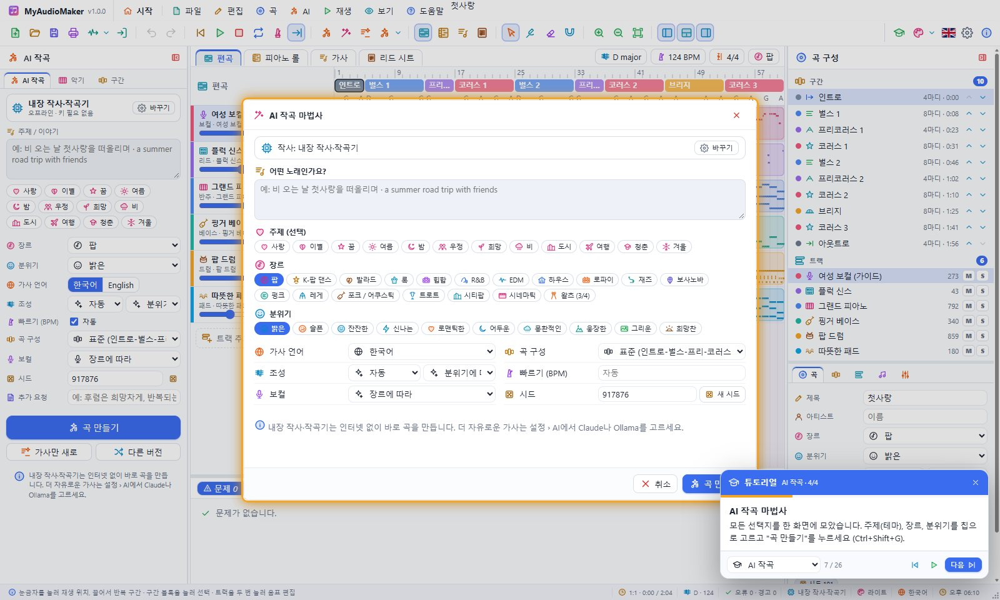
3. 편곡
8. 편곡 화면
곡 전체가 한눈에 보입니다. 위 눈금자는 마디와 구간(색 블록)과 코드, 아래는 트랙마다 음표의 모양입니다. Ctrl+휠로 확대합니다.

9. 구간
구간 블록을 누르면 선택됩니다. 눈금자를 끌면 반복 구간이 정해지고, 누르면 재생 위치가 옮겨집니다.

10. 다시 만들기
구간 탭에서 코드·멜로디·반주·베이스·드럼을 따로 다시 만들 수 있습니다. 코드를 직접 "C G | Am F"처럼 입력해도 반주가 따라옵니다.

11. 트랙
트랙마다 M(음소거), S(솔로), 볼륨이 있습니다. 두 번 누르면 피아노 롤에서 음표를 편집합니다.
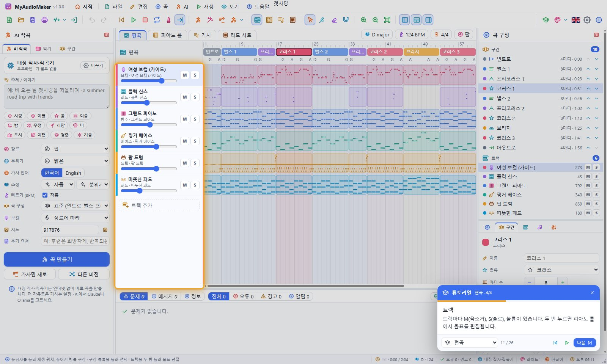
4. 음표 편집
12. 피아노 롤
음표를 끌어 옮기고, 오른쪽 끝으로 길이를 바꿉니다. 보컬 음표에는 음절이 보입니다. 색 띠는 지금 코드의 구성음입니다.
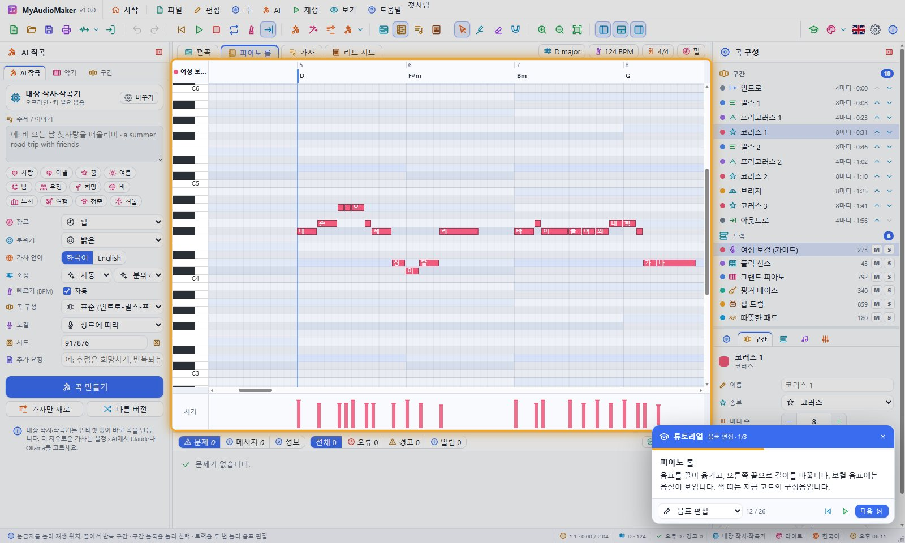
13. 그리기 도구
선택(V)·그리기(D)·지우개(E) 도구와 격자 맞춤. 빈 곳을 두 번 누르면 음표가 생깁니다.

14. 악기
건반·기타·베이스·현악·관악·신스·패드·드럼·보컬 44가지. ▶로 미리 듣고, 두 번 눌러 선택한 트랙의 악기를 바꿉니다.

5. 가사와 악보
15. 가사 편집
구간마다 가사를 고칩니다. 숫자는 음절 수와 음표 수이고, 다르면 빨갛게 보입니다.
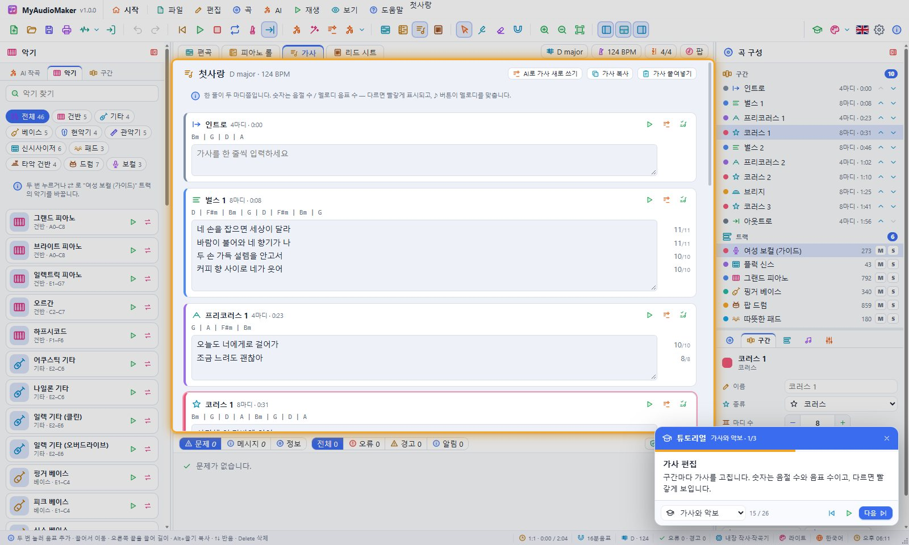
16. 멜로디 맞추기
가사를 바꾸면 멜로디가 음절 수에 맞게 다시 만들어집니다. AI 버튼은 그 구간의 가사만 새로 씁니다.

17. 리드 시트
보컬 멜로디가 오선 악보로, 위에는 코드, 아래에는 가사가 나옵니다. 인쇄할 수도 있습니다.

6. 듣기와 믹스
18. 재생
Space로 재생하고 멈춥니다. 내장 신시사이저가 모든 악기를, 가이드 보컬이 멜로디를 모음으로 부릅니다.

19. 반복과 메트로놈
L로 반복 재생, M으로 메트로놈. 구간을 고르고 "선택한 구간 반복"으로 한 구간만 연습합니다.
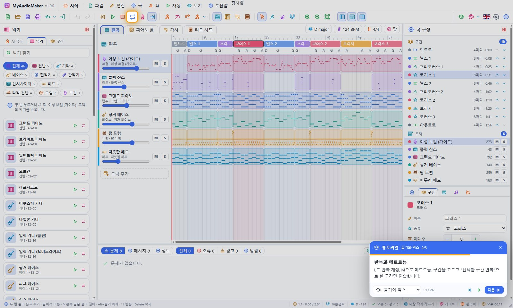
20. 믹스
트랙의 볼륨·좌우·리버브와 마스터 볼륨, 컴프레서를 정합니다.

7. 저장과 내보내기
21. 저장
곡은 .mam 파일로 저장됩니다 (Ctrl+S).
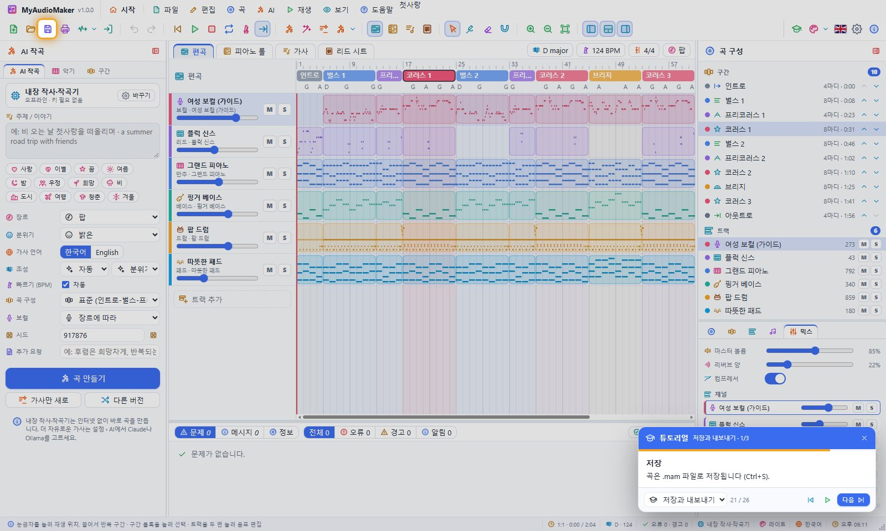
22. 내보내기
WAV(16·24·32비트), 트랙별 스템, MIDI(가사 포함), 가사 TXT, 시간 맞춘 LRC, 코드표로 내보냅니다.
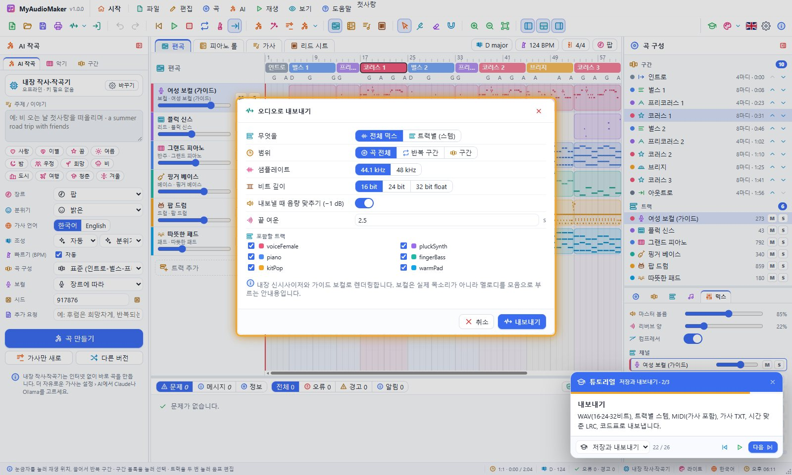
23. 인쇄
리드 시트·가사·코드표·편곡 개요·곡 정보를 미리 보며 인쇄하거나 PDF로 저장합니다.

8. 설정과 도움말
24. AI 설정
내장 작사기·Claude·Ollama 중에서 고르고, Claude는 API 키와 모델, Ollama는 주소와 모델을 넣고 연결을 확인합니다.

25. 단축키
모든 단축키가 설정 › 단축키에 있습니다.
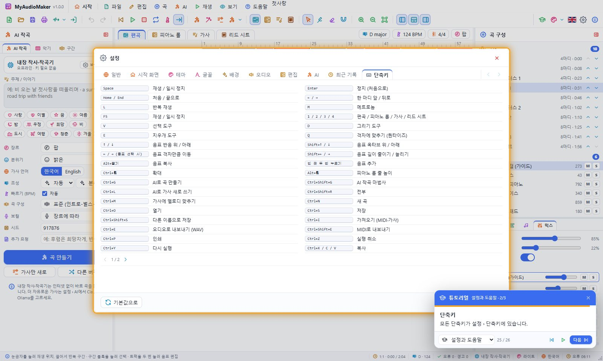
26. 다 됐습니다
언제든 도움말 › 튜토리얼(F11)로 다시 볼 수 있습니다. 이제 나만의 곡을 만들어 보세요!

튜토리얼은 도움말 › 튜토리얼(F11)에서 언제든 다시 볼 수 있습니다. 전체를 녹화한 동영상은 도움말 › 튜토리얼 동영상에서 재생합니다 (만든 경우: npm run tutorial:video).